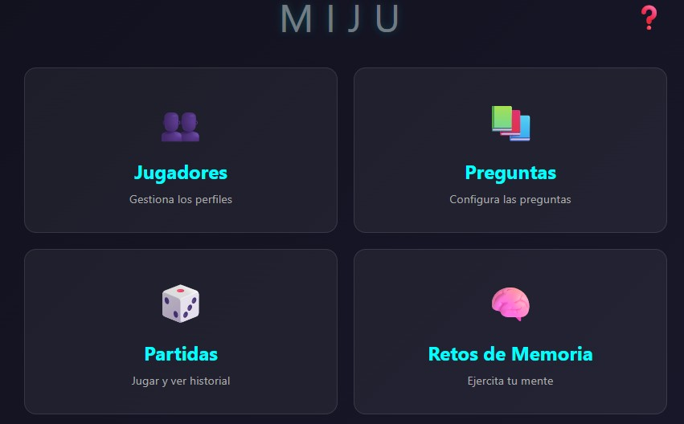
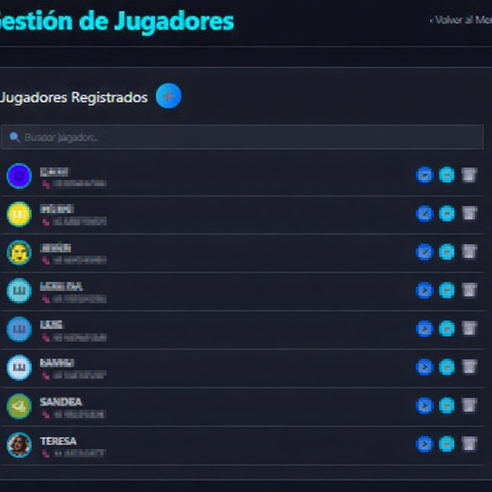
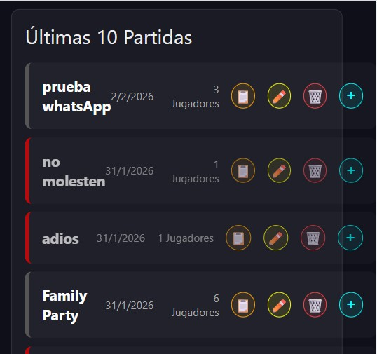
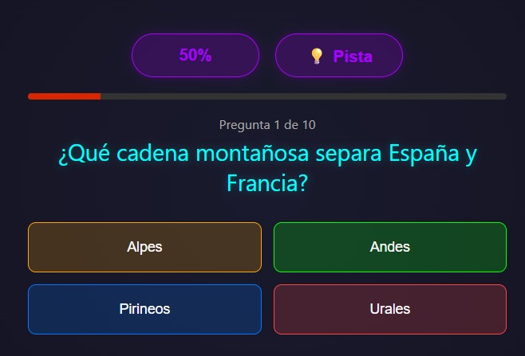
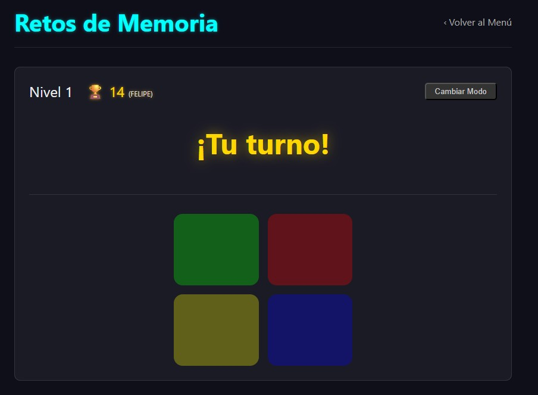
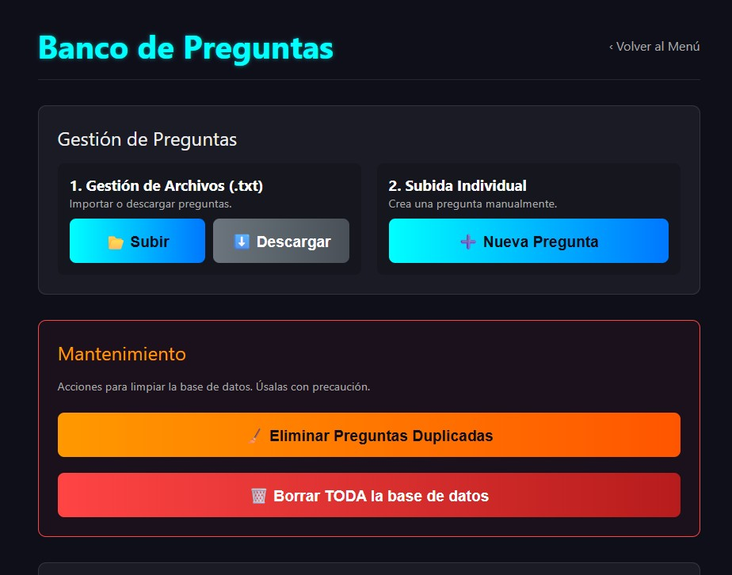

¡Bienvenido a la guía de MIJU! Aquí encontrarás todo lo que necesitas saber para exprimir al máximo la aplicación. ¡Vamos allá!
La puerta de entrada a toda la diversión. Desde aquí accedes a las secciones principales.
Aquí es donde das de alta a los participantes. Un jugador creado aquí podrá ser añadido a cualquier partida de MIJU o competir en los Retos de Memoria.
El centro de control para crear y administrar las partidas de MIJU.
Configura las reglas del juego: referencia, tiempo por pregunta, cantidad de preguntas, y reglas especiales como si los errores restan o si los jugadores deben añadir sus propias preguntas.
Al hacer clic en una partida, se abre un modal con toda la información y más acciones:
¡La hora de la verdad! Aquí es donde ocurre la magia.
Antes de que empiece el quiz, los jugadores pueden unirse. Si la regla está activa, cada uno deberá añadir una pregunta antes de poder empezar.
Un desafío para poner a prueba tu capacidad de retentiva. ¡Compite por el récord global!
Si fallas, se mostrará tu puntuación (niveles completados). Si bates un récord personal o global, ¡tendrás opciones para compartir tu hazaña y picar a tus rivales!
El corazón del MIJU. Aquí puedes añadir, editar y gestionar todas las preguntas que se usarán en las partidas.
